A Asociación


Quen somos
Xente de fóra de Santiago (case toda) que vive en Compostela e que trouxo na maleta a pandeireta, as cantigas e as ganas de foliada.
A Asociación Xente de Fóra é unha entidade sen ánimo de lucro. O nome di de onde vimos, non quen pode entrar. Para que non nos chamen xenófobos temos algún da capital tamén.
Misión
Que a cultura galega se viva en Santiago: que a música, o baile e o canto tradicionais se aprendan, se toquen e se bailen, en galego e con quen se queira sumar.
-
Música e canto
Coidar o patrimonio inmaterial galego: as cantigas e os toques que se aprenderon de oído, para que sigan pasando de man en man.
-
Baile
Que calquera poida aprender a bailar o tradicional, veña de onde veña e saiba o que saiba.
-
Lingua galega
Promover o uso do galego. Nas cantigas xa vai de seu.
-
Mocidade
Actividades culturais e de lecer para a xente nova: foliadas, seráns e obradoiros.
Son os fins do artigo 6 dos estatutos.
A nosa visión
Unha tradición que se aprende fóra e dentro das aulas: no curso e nos ensaios, pero tamén nas prazas, nas foliadas e alí onde cadre.

Historia
Cinco persoas asinamos en Santiago a acta fundacional e os estatutos.
A Xunta inscribe a asociación no Rexistro Central de Asociacións de Galicia, co número 2026/28733-1.
Comeza o primeiro curso de baile tradicional.
- Agora
Faltas ti. Faite socia.
Datos da entidade
- Nome legal
- ASOCIACIÓN XENTE DE FÓRA
- NIF
- G05571401
- Rexistro
- Rexistro Central de Asociacións de Galicia, n.º 2026/28733-1
- Sede
- Santiago de Compostela
- Correo
- info@xentedefora.gal